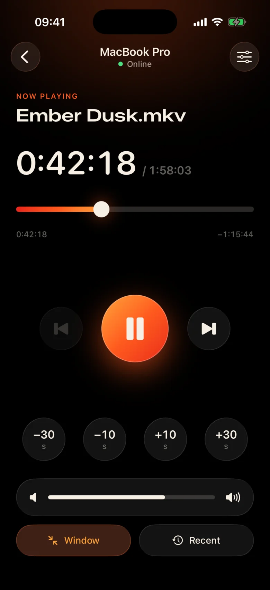
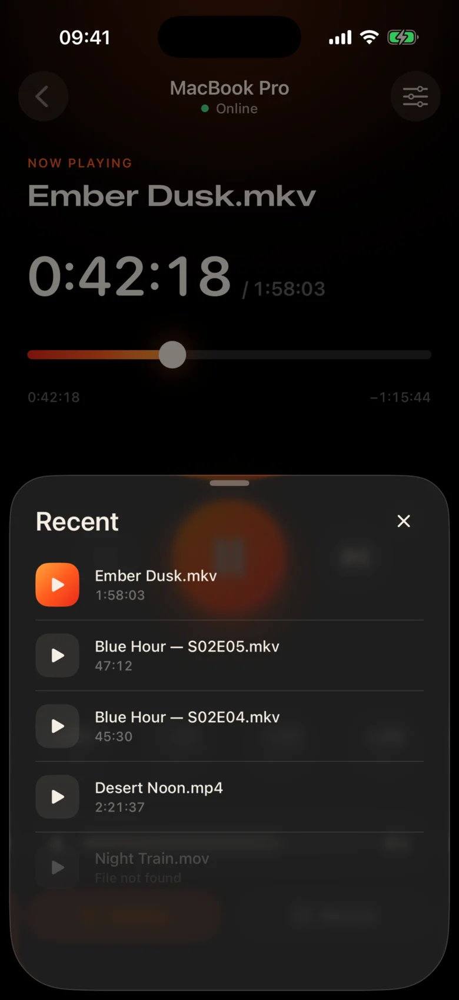
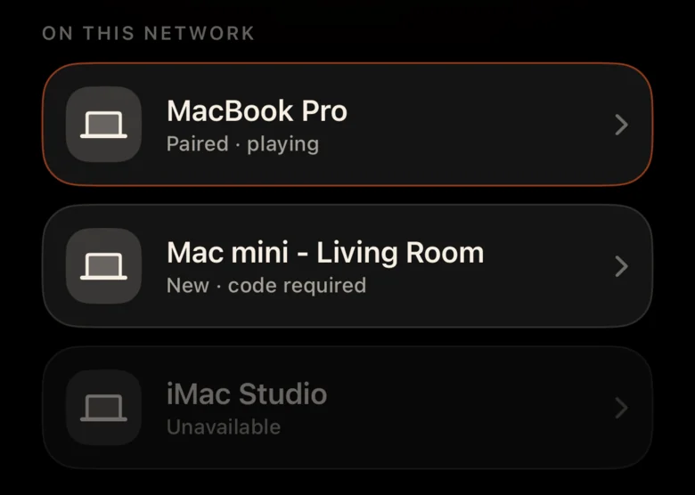
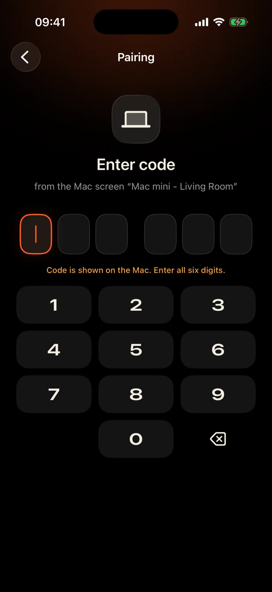

The Mac is across the room
It’s plugged into the projector by the wall. Every pause means getting up, finding the trackpad in the dark and squinting at a tiny control bar.
Kinrox: tap pause on the phone in your hand.
Kinrox plays any video on your Mac — and turns your iPhone into its remote. MacBook on the projector, you on the couch: pause, jump back 10 seconds, turn the volume down or start the next episode without leaving the blanket.


It’s plugged into the projector by the wall. Every pause means getting up, finding the trackpad in the dark and squinting at a tiny control bar.
Kinrox: tap pause on the phone in your hand.
Whispers in one scene, explosions in the next — and someone is already asleep in the next room.
Kinrox: a volume slider right under your thumb.
Web panels with IP addresses and passwords, a browser tab that falls asleep, buttons made for a desk — not for a couch.
Kinrox: finds your Mac by itself, pairs with one code.

Big targets, a dark warm theme and a light tap of haptics under every press. You can use it without looking away from the film.
Every control is large enough to hit half‑asleep.
Missed a line? One tap back. Skip the intro with two.
Kinrox’s own volume, from 0 to 100. The Mac’s system volume stays untouched.
Previous and next file from the same folder, in Finder order.
Pick something you watched before — it opens on the Mac.
Drag the timeline to any moment, switch fullscreen from the couch.
No IP addresses, no passwords, no account. After the first code your iPhone reconnects by itself.
Drag a file into Kinrox or press ⌘ O. The remote server is on by default.
Kinrox shows up on its own when both devices are on the same Wi‑Fi.

The Mac shows a code that lives for two minutes. Three wrong tries and it’s gone.


Alex’s iPhone wants to control Kinrox. Enter this code on your phone.
 Code expires in 1:47
Code expires in 1:47
The video is the interface. A thin layer of glass appears when you need it and hides after three seconds.

Built on libmpv, the engine behind mpv and IINA. Choose embedded or external audio and subtitles. VideoToolbox handles hardware decoding.
Kinrox lines up the videos in the folder and starts the next one when an episode ends — “2” before “10”, like Finder.
Keyboard ⏯ keys, Control Center and Now Playing control Kinrox. Up to 20 recent files wait on the start screen.
Your Mac and iPhone exchange playback commands directly over your local network. Your videos stay on the Mac.
Discovery over Bonjour, connections only from your own subnet. Public addresses and cellular are refused.
Every command travels in an encrypted channel. Pairing tokens live in the Keychain on both devices.
X25519HKDF-SHA256ChaCha20-Poly1305No accounts or usage analytics. The Mac checks a public update feed daily without unique identifiers or system profiling. This website has no analytics or cookies.
The remote sees titles and durations, never file paths. Opening a recent file is resolved on the Mac.
Kinrox is written in Swift 6 and SwiftUI on top of libmpv. Every line of the player, the remote and the protocol is on GitHub.
Build from source# Xcode 26.5, XcodeGen and mpv from Homebrew
brew install xcodegen mpv pkg-config
git clone https://github.com/awaik/Kinrox.git
cd Kinrox
cp -n Config/Signing.local.xcconfig.example \
Config/Signing.local.xcconfig
# Set your team: docs/runbooks/RUNBOOK-BUILD-AND-SIGNING.md
./Scripts/check-env.sh
./Scripts/generate.sh
xcodebuild -workspace Kinrox.xcworkspace \
-scheme PlayerMac -configuration Debug \
-destination 'platform=macOS,arch=arm64' \
-derivedDataPath DerivedData build
open DerivedData/Build/Products/Debug/Kinrox.appPlayback and remote control work without internet access when the Mac and iPhone share a Wi‑Fi network. The Mac uses HTTPS for daily update checks and downloads an update when you choose to install it.
Yes. Kinrox plays on whatever your Mac shows — a projector, a TV over HDMI, or a display connected with AirPlay.
Macs with Apple silicon on macOS 14 Sonoma or later, and iPhones on iOS 17 or later. Intel Macs are not supported yet.
Yes. Each iPhone pairs once with its own code; up to four remotes can be connected at the same time. You can revoke any of them in the player settings.
Yes. On Mac, use the Audio & Subtitles button or the Audio and Subtitles menus. Choose embedded tracks, find external files in nested folders, or turn subtitles off. Kinrox can remember your choice for the next episode.
Nothing. Kinrox is free and open source under the GNU GPL v3.
Kinrox for Mac and iPhone. Free, open source, and made for movie nights.